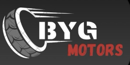
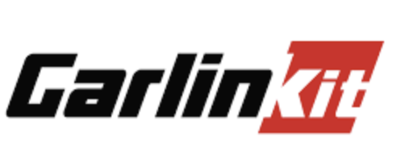

En este apartado se van a encontrar proyectos realizados hasta la actualidad y una breve explicacion de ellos
Automatizacion de excel:
He desarrollado una mini programación en Excel utilizando macros y VBA (Visual Basic for Applications) para un concesionario de autos Toyota, enfocándome en mejorar la eficiencia del área administrativa. La idea principal de este proyecto era automatizar una serie de tareas diarias que, de otro modo, consumirían una cantidad significativa de tiempo y recursos humanos. Estas tareas incluían la actualización automática del inventario de vehículos, el seguimiento de ventas diarias y mensuales, y la generación de reportes financieros detallados.
Mediante el uso de macros, logré crear scripts que automatizaban la entrada de datos y la generación de reportes, eliminando la necesidad de realizar estas acciones manualmente. Esto no solo redujo el margen de error en la gestión de la información, sino que también permitió que los empleados del área administrativa tuvieran más tiempo para concentrarse en otras actividades cruciales, como la atención al cliente y la planificación de estrategias de ventas.
Adicionalmente, desarrollé funciones específicas para alertar al equipo sobre niveles de inventario bajos y proporcionar informes detallados de desempeño, lo cual ayudó a tomar decisiones más informadas y a tiempo. La automatización de estos procesos no solo optimizó la eficiencia operativa del concesionario, sino que también mejoró la precisión y la rapidez en la toma de decisiones, contribuyendo así al éxito general del negocio. Este enfoque proactivo y tecnológico permitió al concesionario de Toyota mantener un alto estándar de calidad en su operación diaria y en la satisfacción del cliente.
Venta de vehiculos:
Inicié un proyecto llamado ByG Motors, en el cual desarrollé una página web dedicada a facilitar la venta de vehículos. A través de nuestra plataforma, los propietarios de automóviles pueden enviarnos imágenes y detalles de sus vehículos que desean poner a la venta. Una vez recibida la información, nuestro equipo se encarga de gestionar todo el proceso de promoción y venta.
En ByG Motors, publicamos los anuncios en diversas redes sociales y otras plataformas de alto tráfico para maximizar la visibilidad del vehículo y llegar a una audiencia más amplia. No solo nos encargamos de la promoción, sino que también gestionamos las consultas de posibles compradores, organizamos visitas y pruebas de manejo, y llevamos a cabo las negociaciones de precio en nombre del propietario.
Nuestro objetivo es simplificar el proceso de venta, permitiendo a los clientes ahorrar tiempo y esfuerzo, mientras que nosotros nos encargamos de todos los detalles. Una vez que se concreta la venta, ByG Motors recibe una comisión, lo que nos motiva a asegurar que cada transacción sea rápida, eficiente y beneficiosa para ambas partes. Este modelo de negocio ofrece una solución integral para quienes desean vender su automóvil de manera efectiva y sin complicaciones.
Comercializacion:
Recientemente, he iniciado un proyecto de importación y comercialización de productos tecnológicos, centrándome en ofrecer soluciones innovadoras y prácticas que mejoran la comodidad y eficiencia en el hogar y en la conducción. Uno de los productos principales que importo y distribuyo son las teclas de luz inteligentes de la marca Sonoff. Estos dispositivos permiten a los usuarios controlar la iluminación de sus hogares de forma remota a través de aplicaciones móviles, programar horarios de encendido y apagado, y ajustar la intensidad de las luces para crear diferentes ambientes. Son ideales para quienes buscan mejorar su experiencia de automatización en el hogar, ya que son fáciles de instalar y utilizar, proporcionando un control total desde cualquier lugar.
Además de las soluciones de automatización para el hogar, también he incluido en mi catálogo la importación de paneles solares. Estos paneles no solo ayudan a los usuarios a reducir su huella de carbono y a contribuir al uso de energías renovables, sino que también permiten ahorrar en costos de electricidad a largo plazo. Me esfuerzo por ofrecer paneles de alta calidad que sean eficientes y duraderos, apoyando a mis clientes en su transición hacia opciones más sostenibles.
En el ámbito de la tecnología para automóviles, he comenzado a importar dispositivos CarlinKit, que facilitan la conectividad del auto con el celular. Estos dispositivos permiten a los conductores conectar sus teléfonos a los sistemas de infoentretenimiento de sus vehículos, ofreciendo funciones como la navegación GPS, reproducción de música, llamadas manos libres y más, todo a través de una interfaz sencilla e intuitiva. La instalación de estos dispositivos mejora significativamente la experiencia de conducción, haciendo que sea más segura y cómoda.
Mi enfoque en la importación y comercialización de estos productos está basado en la calidad y la innovación. Me esfuerzo por mantenerme actualizado con las últimas tendencias y avances tecnológicos para asegurar que mis clientes tengan acceso a las mejores soluciones disponibles en el mercado. Mi objetivo es no solo satisfacer las necesidades de mis clientes, sino también superar sus expectativas, brindando un servicio de atención al cliente de primera clase y productos de alta calidad que transforman la forma en que interactúan con su entorno y sus vehículos.